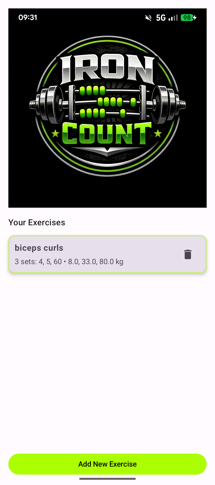
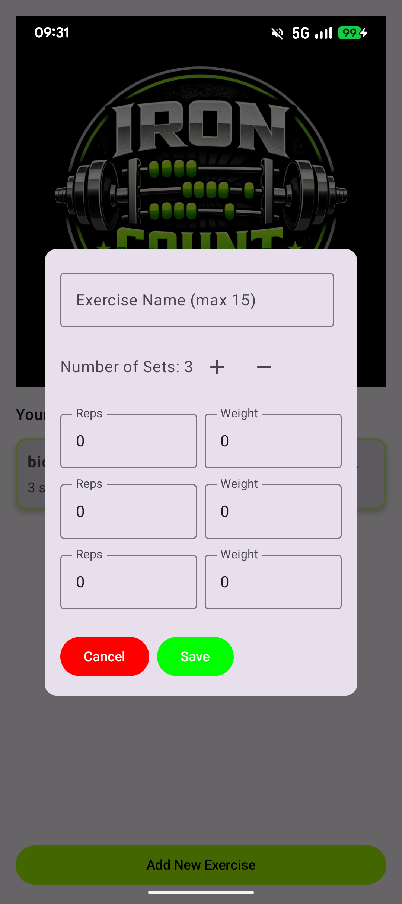
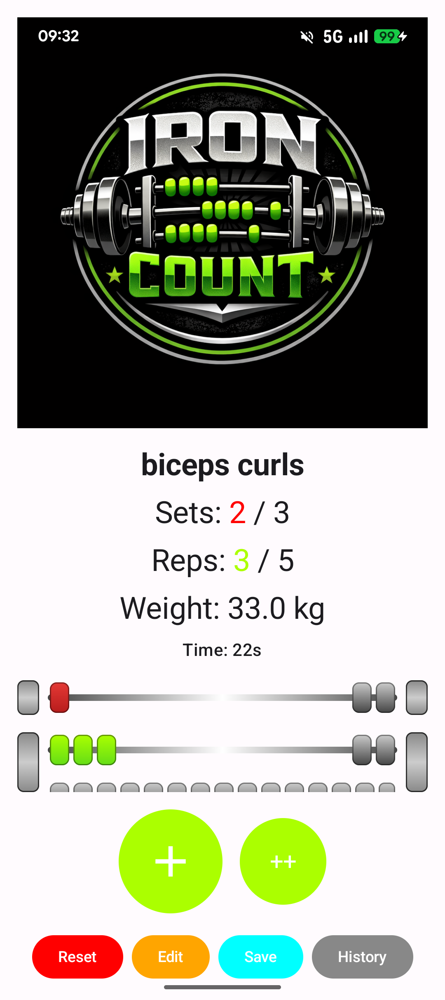
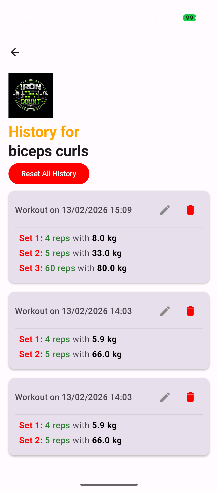

A simple and powerful fitness app to track workouts, count reps, and stay focused during training.
Download on Google PlayIronCount is a focused workout tracker and rep counter app designed for fitness enthusiasts. Count reps using a virtual abacus, manage your own exercises, and track your training sessions with a simple and distraction-free interface.

Workout Tracker

Rep Counter

Exercises

Session Overview
IronCount helps you stay focused during workouts without complex menus or distractions. It is the perfect fitness app for users who want a simple and efficient way to track reps and workouts.
Is IronCount free?
Yes, the app is free to download.
Can I create my own exercises?
Yes, you can fully customize your exercises.
Does it work offline?
Yes, IronCount works without internet connection.
Who is this app for?
It is designed for gym users, athletes, and fitness enthusiasts.
Start tracking your workouts and counting reps with a simple and effective workout tracker app.
Install on Google Play